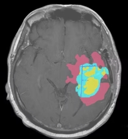

Deep Learning in Medical Imaging
Clinical Precision.
Volumetric Insight.
Automated multi-class segmentation of BraTS MRI datasets using 3D U-Net architectures. Precisely identifying Edema, Enhancing, and Non-Enhancing tumor regions.
3D-UNet
Core Engine
484
MRI Volumes
0.996
Specificity
PATCH
Processing
End-to-End Pipeline
System Workflow.
NIfTI Input
4D MRI Channels
Patch Extraction
160x160x16 Crops
3D U-Net
Feature Extraction
Soft Dice Loss
Overlap Optimization
Final Labels
Tumor Segmentation
Clinical Overview
Why Automated Segmentation?
Manual segmentation of brain tumors is a complex, time-consuming process prone to inter-observer variability. This project implements a standardized AI approach to assist clinicians.
High Efficiency
Reduces diagnostic time from hours of manual tracing to minutes of AI inference.
Consistency
Eliminates subjective bias in boundary identification across different practitioners.

[AI_SCAN_ACTIVE]
Analyzing BraTS Volumetric Data...
Edema
Non-Enhancing
Enhancing
LIVE AI SCANNER